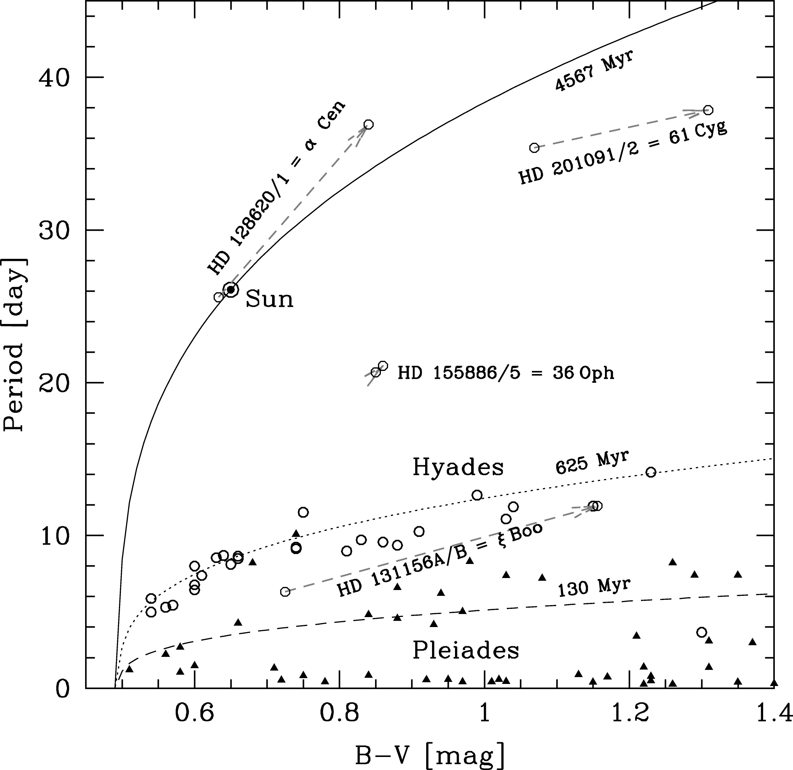

Rapid Rotation in the Kepler Field
Not a Single Star Phenomenon
Gregory Simonian
Journal Club Autumn 2018
September 14, 2018
Overview of Rotation
Rotation is a fundamental property of stars
 Gallet & Bouvier (2015)
Gallet & Bouvier (2015)
Kepler
The Kepler field is thought to be old
 Credit: Carter Roberts / Eastbay Astronomical Society / NASA
Credit: Carter Roberts / Eastbay Astronomical Society / NASA
Kepler Rotation
34,030 stars have periods in McQuillan et al (2014)
 McQuillan et al (2014)
McQuillan et al (2014)
Nature of Rapid Rotators
Misclassified Subgiants
 van Saders & Pinsonneault (2013)
van Saders & Pinsonneault (2013)
Nature of Rapid Rotators
PSF Contaminants
 Abdul-Masih et al (2016)
Abdul-Masih et al (2016)
Nature of Rapid Rotators
Tidally-synchronized Binaries
 Raghavan et al (2010)
Raghavan et al (2010)
Results

Results
Rapid rotators consistent with binaries

Future Work
- Characterize the 217 candidate TSBs
- Model the TSB background for gyrochronology
- Apply TSB background model to previous gyrochronology calibrations
- Match pre-interaction population to post-interaction populations
Summary
- Systems with 1.5 day < P < 7 day show a high photometric binary fraction
- Comparison with EBs show synchronized binaries are adequate to explain the rapid rotators.
- 217 candidate systems for understanding stellar tides and binary interactions.
Gyrochronology
Rotation can measure ages

Mamajek & Hillenbrand (2008)
Kepler
Rotation measured through starspot variability
Credit: SOHO/MDI